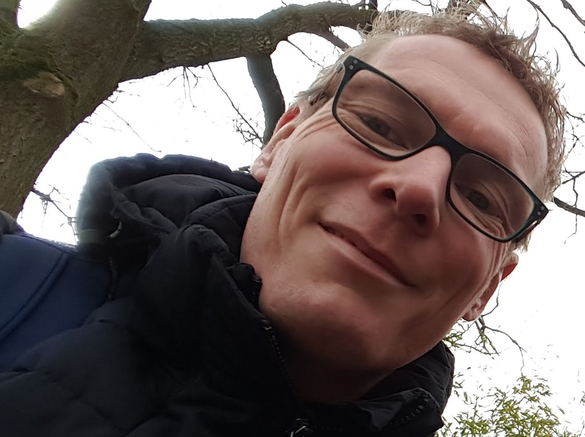

Hallo, welkom op mijn pagina. Mijn naam is Hans Nijland en ik ben docent industriele automatisering aan het ROC van Twente.
Een van de mooiste dingen van mijn beroep is het moment waarop een student vol zelfvertrouwen een opdracht laat zien waarin hij of zij heeft voldaan aan de opdracht ook al
vond de student het lastig. Toch doorzetten en zelf een oplossing heeft bedacht. De trots in de ogen van de student en de houding van een aankomend professional. Dat is het
precies de reden waarom ik voor de klas sta.
Maecenas vel lobortis leo. Nulla vitae consectetur enim, in porttitor urna. Nulla eleifend congue neque eu cursus. Cras vel consectetur lorem, venenatis finibus urna.
Quisque tincidunt venenatis turpis, at rhoncus nulla tempus in. Proin in hendrerit arcu, non ornare massa. Sed mi dolor, dignissim at ex vitae, imperdiet sagittis felis.
Quisque et mollis lacus, nec gravida lorem. Vestibulum ante ipsum primis in faucibus orci luctus et ultrices posuere cubilia curae; Aliquam erat volutpat. Maecenas magna tortor,
fermentum et aliquet at, venenatis quis turpis. Fusce ipsum purus, efficitur ut lacinia luctus, lobortis quis purus. Nam nec quam nisl. Vestibulum sed sem magna.